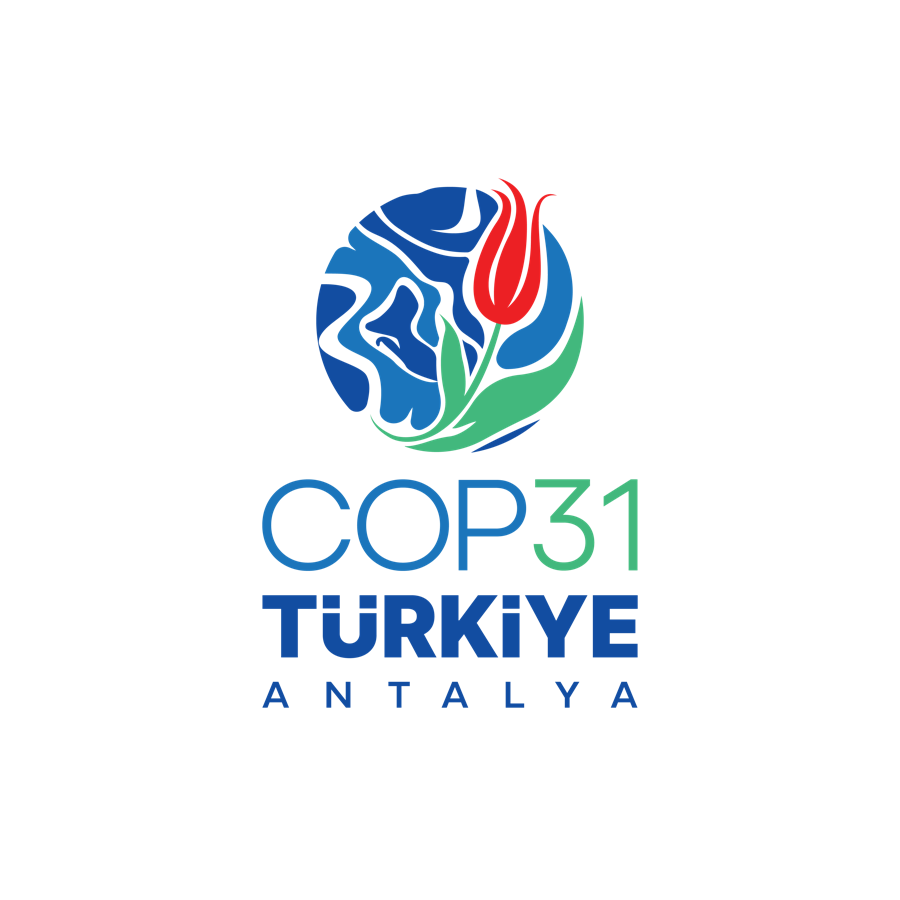
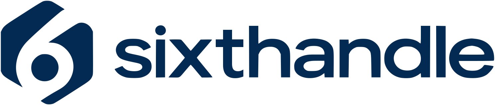
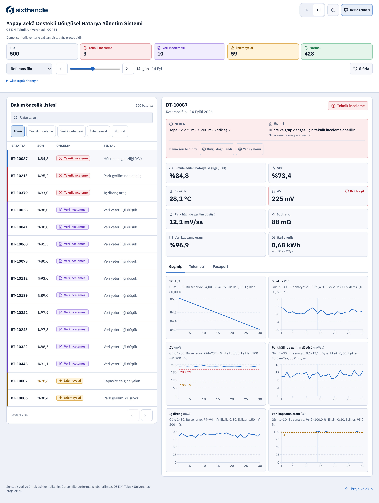
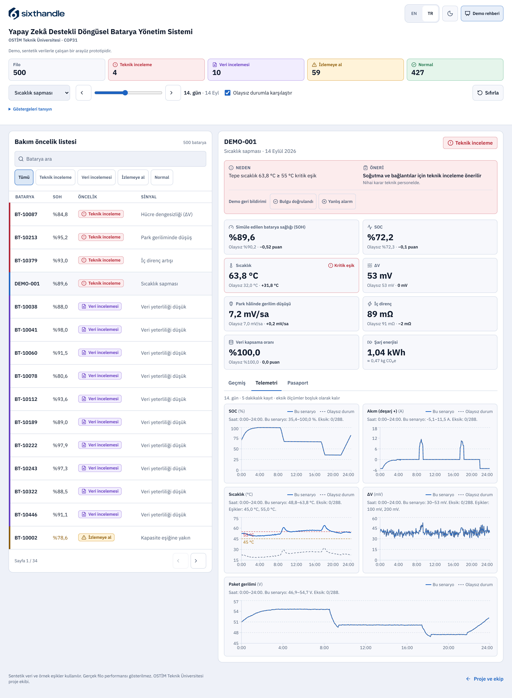
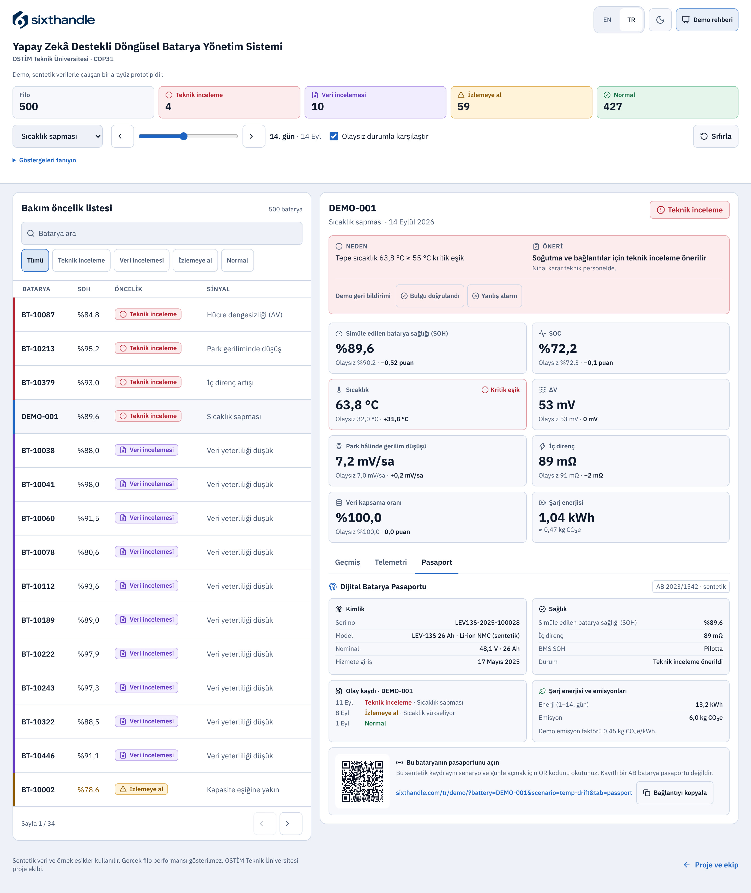

Batarya araç değiştirir. Kayıt bataryayla kalmalıdır.
Paylaşımlı filolarda bir batarya farklı araçlarda kullanılır.
Bakım ekibinin doğru karar verebilmesi için sağlık, onarım ve değişim kayıtları batarya kimliğine bağlanır.


Paylaşımlı mikromobilite filoları için batarya sağlığı izleme, bakım önceliği ve Dijital Batarya Pasaportu
Paylaşımlı filolarda bir batarya farklı araçlarda kullanılır.
Bakım ekibinin doğru karar verebilmesi için sağlık, onarım ve değişim kayıtları batarya kimliğine bağlanır.
Demo sentetik veriyle çalışır.

Demo sentetik veriyle çalışır.

Demo sentetik veriyle çalışır.

Batarya ömrünün uzatılması, yeniden kullanım ve geri dönüşüm kararlarının izlenmesi COP31’in döngüsellik ve elektrifikasyon başlıklarıyla ilişkilidir.
Proje teklif aşamasında. Pilot çalışma planlanıyor.